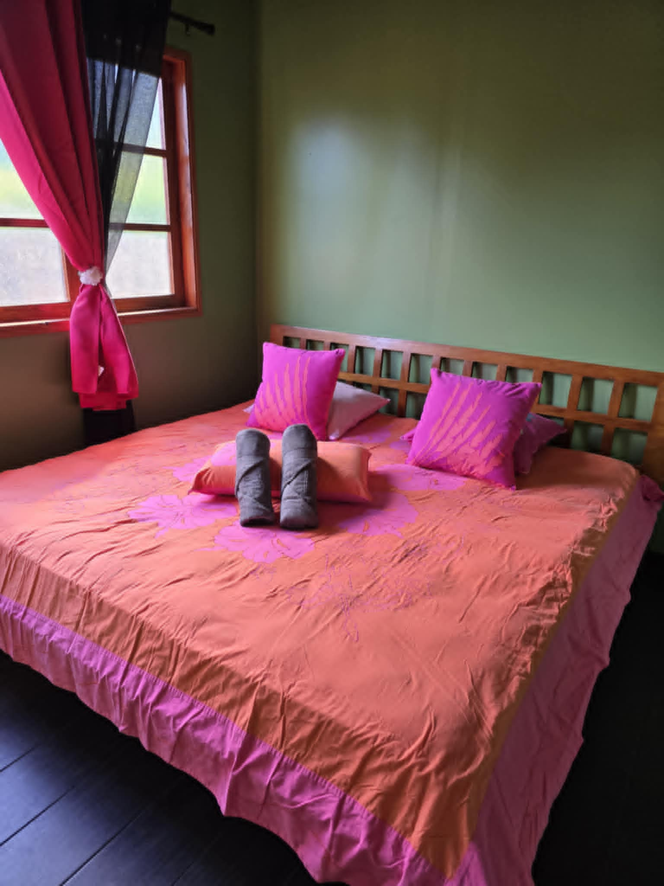
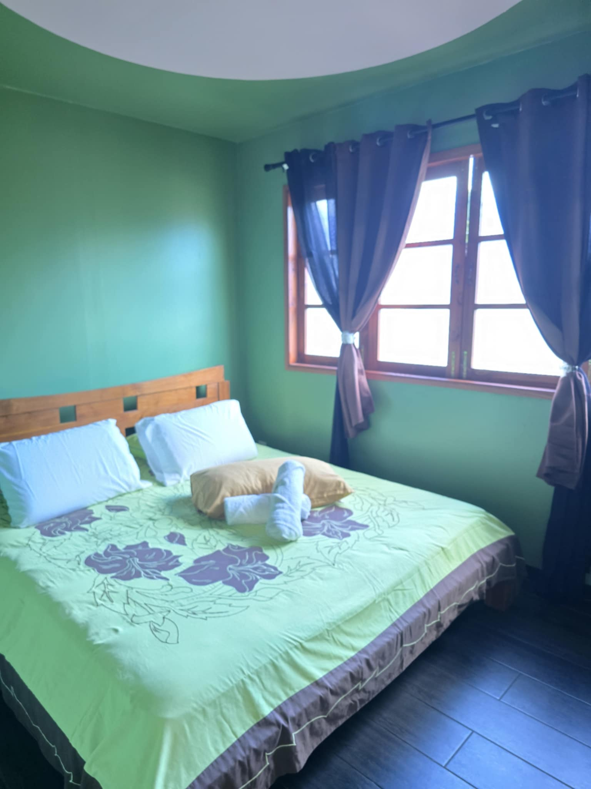
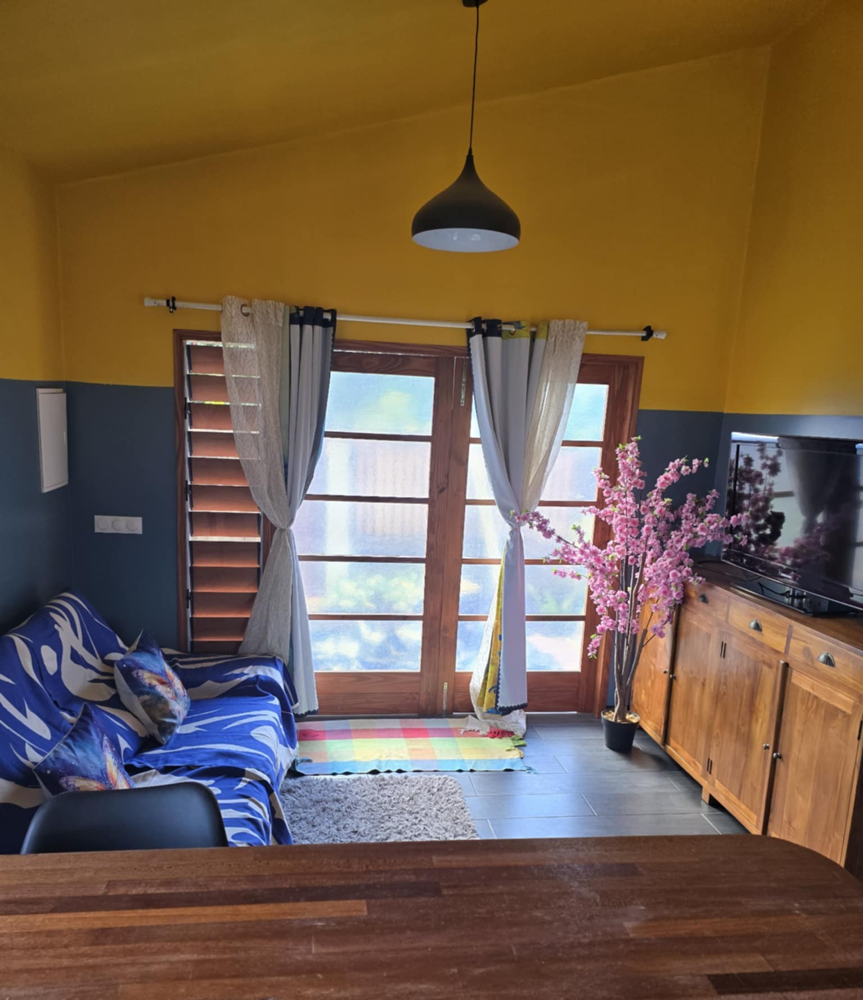

🌿 Escapade détente à Vairao – Votre coin de paradis à Tahiti
🌿 Relaxing escape to Vairao – Your paradise in Tahiti
Bienvenue à Vairao, sur la côte sauvage et authentique de Tahiti Iti !
Hébergement
Lodging





Activités
Activities
🌿 Excursion sauvage à Te Pari
- 🛶 Trajet en bateau
- 🌊 Pause baignade dans le lagon turquoise
- 🍍 Pique-nique local inclus
- 📜 Partage de légendes avec un guide local
Contact : +689 87 28 63 82 – tahitiboatexcursionandsurf@gmail.com
🚤 Excursion avec Fifiri Boat
- 🔥 Bateau avec BBQ
- 🍍 Apportez vos ingrédients
- ✅ Confort pour famille ou amis
Contact : +689 89 72 10 48 – villateraimoana@gmail.com
🌊 Tahiti Iti Pearl Farm – Ferme Perlière de Teahupoo
Visite de la ferme, cycle de vie de la perle, immersion dans la tradition polynésienne.
Contact : +689 89 54 45 44 – tahitiitipearlfarm@gmail.com
Contact
Contact
Email : fareninamuvairao@gmail.com
Téléphone : +689 87 39 88 04
Facebook : Fare Ninamu Vairao